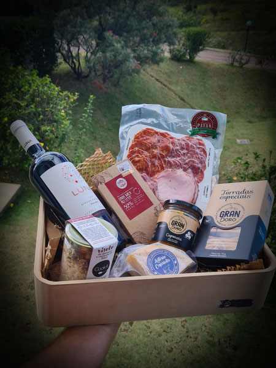
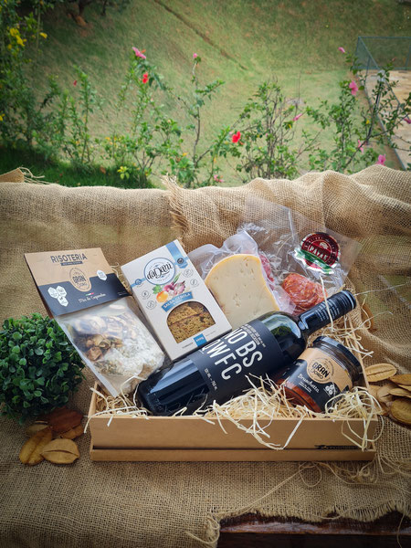
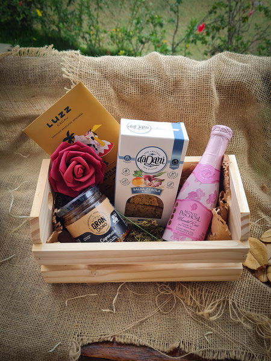
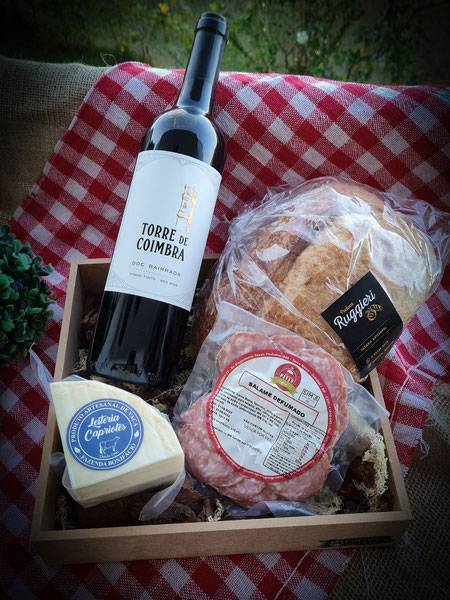

Cestas de vinhos
Cesta de Vinho Premium

Esta cesta inclui uma seleção de vinhos de alta qualidade de diferentes regiões, como um Chardonnay da Califórnia, um Malbec argentino e um Bordeaux francês. Acompanha queijo fino, biscoitos artesanais e chocolates gourmet.
Cesta de Vinho Tinto

Perfeita para os amantes de vinhos tintos, esta cesta apresenta uma variedade de tintos ricos e encorpados, como um Shiraz australiano, um Cabernet Sauvignon chileno e um Tempranillo espanhol. Acompanha frutas secas e um conjunto de acessórios para vinho.
Cesta de Vinho Rosé

Ideal para quem prefere vinhos brancos e rosés, esta cesta inclui um Sauvignon Blanc da Nova Zelândia, um Pinot Grigio italiano e um Rosé provençal. Acompanha uma seleção de frutas frescas da estação e biscoitos salgados
Vinhos Regionais

Esta cesta apresenta uma seleção de vinhos de uma região específica, como a Toscana na Itália ou a região do Douro em Portugal. Acompanha alimentos típicos da região, como azeitonas, pães artesanais e queijos locais.